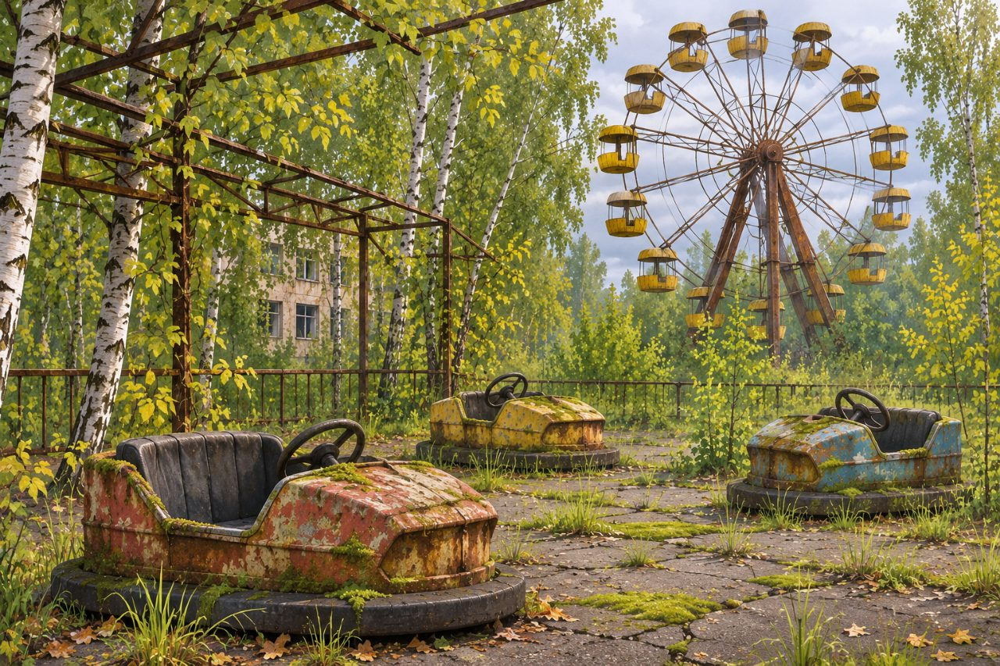
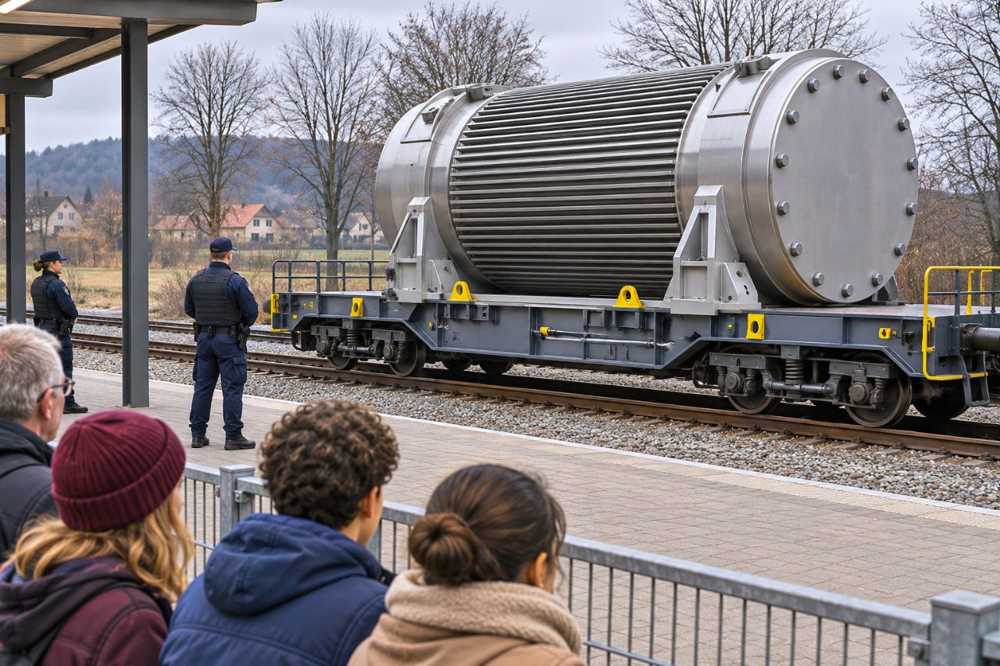
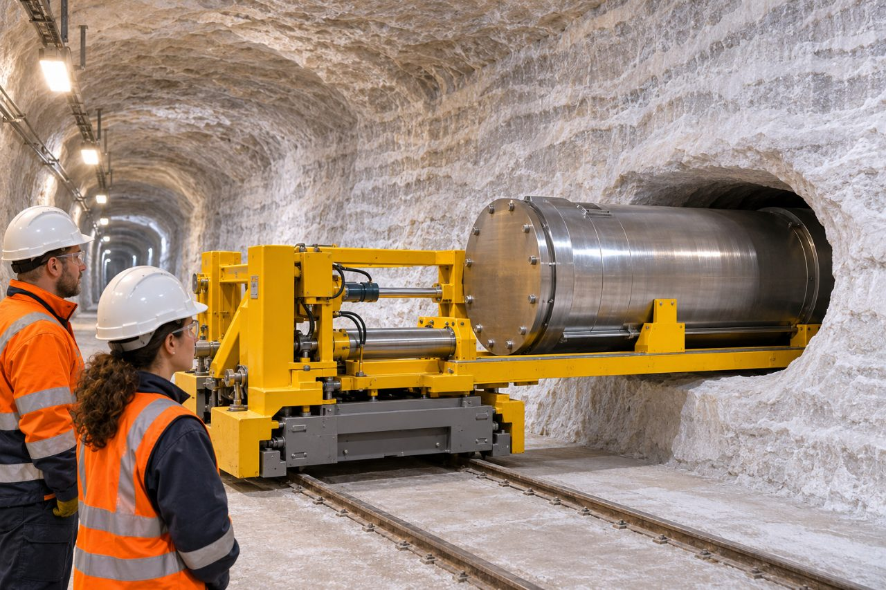

Tschernobyl 1986

Denk mal nach: Die Autoscooter sind verrostet, zwischen ihnen wachsen Bäume. Warum fährt hier niemand mehr?
So ähnlich sieht es heute in der Stadt Prypjat (auch Pripjat geschrieben) im Norden der Ukraine aus. Sie liegt nur wenige Kilometer vom Kernkraftwerk Tschernobyl entfernt. Nach einem Unfall im Kraftwerk mussten 1986 alle Menschen die Stadt verlassen. Sie ist bis heute leer.
Ingenieure planen Kernkraftwerke so, dass sie auch schwere Unfälle beherrschen. Den schlimmsten Unfall, mit dem sie dabei rechnen, nennt man – größter anzunehmender Unfall. Was in Tschernobyl geschah, war noch schlimmer: ein Super-GAU.
In der Nacht zum 26. April 1986 lief an einem der Reaktoren ein Test. Dafür blockierte die Mannschaft die . Die Kühlung versagte, und die Kettenreaktion geriet außer Kontrolle – die Regelstäbe konnten sie nicht mehr bremsen.
Spiele den Unfall unten Schritt für Schritt ab: erst die Ursache, dann der Ablauf, zum Schluss die Folgen.
MERKE
- 26. April 1986: Super-GAU im Kernkraftwerk Tschernobyl (Ukraine). GAU = größter anzunehmender Unfall.
- Bei einem Test wurde die Notabschaltung blockiert → das Kühlwasser siedete → die Kettenreaktion geriet außer Kontrolle → Knallgas explodierte.
- Über 200 radioaktive Stoffe gelangten in die Luft, eine radioaktive Wolke zog über ganz Europa. In Bayern sind manche Pilze und Wildschweine bis heute belastet.
- Folgen: Sperrzone um das Kraftwerk, die Stadt Prypjat ist bis heute verlassen. Radioaktives Iod belastete die Milch – viele Kinder erkrankten an Schilddrüsenkrebs.
Gut zu wissen: Pilze, Milch und Schilddrüse – die Folgen der Strahlung
Mit dem Regen fielen 1986 radioaktive Stoffe auf Wiesen und Wälder – besonders in Südbayern. Einer davon ist Cäsium-137. Es zerfällt langsam: Erst nach etwa 30 Jahren ist die Hälfte zerfallen (). Im Waldboden hält es sich besonders lange. Manche Pilze nehmen es auf – und Wildschweine wühlen im Boden und fressen solche Pilze.
Mit der Wolke kam auch radioaktives . Es fiel auf Wiesen, Kühe fraßen das Gras – und so war die Milch belastet. Im Körper sammelt sich Iod in der . In den Gebieten rund um Tschernobyl erkrankten deshalb viele Kinder später an Schilddrüsenkrebs.
Mehrere Feuerwehrleute und Arbeiter, die gegen das Feuer kämpften, starben in den Wochen danach an der Strahlenkrankheit. Wie viele Menschen später an den Folgen erkrankten oder starben, weiß niemand genau – die Schätzungen gehen weit auseinander.
Der Unfall Schritt für Schritt
Bringe die Schritte mit den Pfeilen in die richtige Reihenfolge.
Tschernobyl und die Folgen
Tippe zuerst auf eine Lücke, dann auf das passende Wort. Zwei Wörter bleiben übrig.
Fukushima 2011
11. März 2011, Japan: Etwa 160 km vor der Küste bebt der Meeresboden – ein starkes . Im Kernkraftwerk Fukushima schalten sich die Reaktoren sofort ab. Die Kettenreaktion stoppt.
Kurz darauf rollt ein heran: Eine etwa 15 m hohe Welle überflutet Teile des Kraftwerks. Sie zerstört die Pumpen, die Meerwasser zum Kühlen holen, die und die Schaltschränke.
Das kennst du aus Modul 3: Auch ein abgeschalteter Reaktor ist noch heiß. Die Brennelemente geben weiter Wärme ab und müssen gekühlt werden. Ohne Strom aber keine Pumpen – und ohne Pumpen keine Kühlung. Die Reaktorkerne schmelzen: eine .
Dabei bildet sich . Es explodiert und zerstört die Reaktorgebäude. Radioaktive Stoffe gelangen in Luft und Meer. Das Land rund um das Kraftwerk ist .
MERKE
- 11. März 2011: Ein Seebeben löst einen etwa 15 m hohen Tsunami aus. Er überflutet das Kernkraftwerk Fukushima (Japan).
- Pumpen, Notstrom und Schaltschränke werden zerstört → keine Kühlung → Kernschmelze → Knallgas-Explosionen.
- : Rund 160 000 Menschen mussten ihre Heimat verlassen ( etwa 30 km). Die meisten der rund 18 000 Todesopfer der Katastrophe starben durch Erdbeben und Tsunami – nicht durch die Strahlung.
Was kam woher?
Am 11. März 2011 geschahen zwei Katastrophen auf einmal. Tippe eine Karte an und dann den passenden Bereich.
Was stimmt?
Erkläre in eigenen Worten ✨ KI prüft
Schreibe ganze Sätze oder Stichpunkte. Die KI achtet nur auf den Inhalt, nicht auf die Rechtschreibung.
Radioaktiver Abfall
Ein Brennelement bleibt einige Jahre im Reaktor. Danach ist es verbraucht – aber es strahlt noch sehr stark und ist heiß. Auch Forschungsreaktoren und Krankenhäuser erzeugen radioaktiven Abfall. Manche Stoffe darin strahlen extrem lange: hat eine Halbwertszeit von 24 000 Jahren.
Zuerst kommen verbrauchte Brennelemente in ein voller Wasser, ein Jahr oder länger. Danach lagern sie trocken in einem auf dem Kraftwerksgelände.

Denk mal nach: Warum wird ein solcher Transport von der Polizei bewacht – und warum hat der Behälter so viele Rippen?
Transportiert und gelagert wird der Abfall in Spezialbehältern, zum Beispiel im . Er wird nur durch die Luft gekühlt. Jeder Behältertyp muss harte Tests bestehen: einen Fall aus 9 m Höhe und ein Feuer von 30 Minuten bei mindestens 800 °C.
Am Ende soll der Abfall in ein tief unter der Erde, 300 bis 1 000 m. In Deutschland gibt es noch kein Endlager – die Suche läuft. Es soll eine Million Jahre lang sicher sein.
Planspiel: Wo soll das Endlager hin?

Denk mal nach: So könnte ein Endlager im Salz aussehen. Was muss das Gestein ringsum über Zehntausende Jahre leisten?
Du planst ein Endlager. Der Abfall muss Zehntausende Jahre sicher eingeschlossen bleiben. Zwei Gefahren gibt es tief unter der Erde: Wasser kann eindringen und radioaktive Stoffe auswaschen, und eine kann das Gestein verschieben. In Deutschland werden drei Gesteine geprüft: Salz, Ton und Granit. Finnland lagert seinen Abfall im Granit – dort geht gerade das erste Endlager der Welt in Betrieb.
Wähle einen Lagerort und beobachte, was das Grundwasser macht. Probiere alle vier aus – und zeig dann, was bei einer Verwerfung passiert.
| Lagerort | Das spricht dafür | Das ist das Risiko |
|---|
Mehrere Schutzschichten (Mehrbarrierenprinzip)
Im Endlager soll nicht nur eine Hülle den Abfall einschließen. Mehrere Schutzschichten liegen wie die Schalen einer Zwiebel darum. Das nennt man :
- innen: ein dichter Behälter aus Stahl,
- darum: eine Verfüllung aus Ton () – wird der Ton nass, quillt er auf und dichtet ab,
- außen: das Gestein – Salz, Ton oder Granit, 300 bis 1 000 m tief unter der Erde.
Wird eine Schicht undicht, halten die anderen den Abfall noch fest.
Wer will ein Endlager? Niemand möchte ein Endlager in seiner Nähe. Viele Menschen haben Angst vor der Strahlung, vor Unfällen bei den Transporten und um ihr Grundwasser. Aber der Abfall ist schon da – er muss irgendwo sicher gelagert werden. Darum sucht Deutschland den Ort, der am sichersten ist.
Schiebe den Regler: Wie lange strahlt Plutonium-239? Vergleiche mit der Geschichte der Menschen. Probiere 24 000 Jahre und 120 000 Jahre aus.
MERKE
- Radioaktiver Abfall entsteht in Kernkraftwerken, Forschungsreaktoren und Krankenhäusern. Manche Stoffe strahlen sehr lange (Plutonium-239: Halbwertszeit 24 000 Jahre).
- Weg des Abfalls: Abklingbecken (ein Jahr oder länger) → Castor → Zwischenlager → Endlager in 300 bis 1 000 m Tiefe.
- Gefahren für ein Endlager: Wasser dringt ein, Verwerfungen verschieben das Gestein. In Deutschland gibt es noch kein Endlager.
- Mehrbarrierenprinzip: Mehrere Schutzschichten schließen den Abfall ein – innen ein Behälter aus Stahl, darum eine Verfüllung aus Ton (Bentonit), außen das Gestein (Salz, Ton oder Granit).
- Niemand möchte ein Endlager in seiner Nähe (Angst vor Strahlung, Transporten, um das Grundwasser). Aber der Abfall ist schon da und muss sicher gelagert werden.
Der Weg des Abfalls
Castor und Endlager
Tippe zuerst auf eine Lücke, dann auf das passende Wort. Zwei Wörter bleiben übrig.
Pro und Contra: Kernenergie – ja oder nein?
Über diese Frage streiten Menschen seit Jahrzehnten. In Deutschland liefert seit April 2023 kein Kernkraftwerk mehr Strom. Andere Länder, zum Beispiel Frankreich, setzen weiter auf Kernkraftwerke und planen neue.
Hier geht es nicht darum, wer recht hat. Du sollst die Argumente beider Seiten kennen und mit Fakten begründen können. Dann kannst du dir selbst eine Meinung bilden.
So bereitest du eine Diskussion vor:
- Thema gliedern: Brennstoff (), Kraftwerk, Abfall, andere Energiequellen.
- Informieren: Bücher, Zeitungen, Internet, Fachleute.
- Quellen prüfen: Wer schreibt das – und warum?
- Argumente sammeln: dafür und dagegen.
- Fair diskutieren: zuhören, sachlich bleiben, Fakten nennen.
Dafür oder dagegen?
Sortiere die Argumente. Tippe eine Karte an und dann das passende Feld. Du sortierst nur – deine eigene Meinung ist damit nicht gefragt.
⚔️ Duell gegen die KI: Kernenergie – ja oder nein?
Zwei ausgedachte Gesprächspartner übertreiben gern: Paul ist großer Fan der Kernenergie, Kim ist strikt dagegen. Beide behaupten Dinge, die so nicht stimmen.
- Paul oder Kim stellt eine Behauptung auf – mal dafür, mal dagegen.
- Du korrigierst sie mit einem Fakt aus diesem Modul. Schreibe mindestens einen ganzen Satz.
- Die KI prüft als Schiedsrichter, ob dein Fakt stimmt und zur Behauptung passt.
Nach vier Behauptungen hast du das letzte Wort: deine eigene Meinung, mit Fakten begründet. Dafür oder dagegen – beides ist erlaubt. Du weißt nicht weiter? Tippe auf 💡 Tipp.
Punkte: Fakt passt = 2 Punkte für dich. Halb überzeugend = je 1 Punkt. Kein passender Fakt = 2 Punkte für Paul und Kim. Bei „Nochmal“ kommen andere Behauptungen.
MERKE
- Dafür: viel Energie aus wenig Brennstoff; bei der Stromerzeugung kein CO₂ (Klimaschutz); Arbeitsplätze.
- Dagegen: schwere Unfälle sind möglich; der Abfall strahlt sehr lange, ein Endlager fehlt; Uranabbau verwüstet Landstriche; können Kernkraftwerke ersetzen; jahrzehntelang vom Staat unterstützt ().
- Gute Argumente stützen sich auf Fakten – für jede Meinung.
Training
Löse das Kreuzworträtsel
Tippe in ein Kästchen und schreibe. Tippst du ein Kästchen zweimal an, wechselt die Richtung. Hängst du fest? Bei jeder Frage hilft 💡 Tipp – erst ein Hinweis, dann der Anfangsbuchstabe. Mit 📋 Wörter zeigen siehst du alle Lösungswörter.
Kreuze an
Profi-Check, Lernkarten und Regelheft
Risiken und Folgen der Kernenergie
Tschernobyl (Ukraine), 26. April 1986: Super-GAU (GAU = größter anzunehmender Unfall). Test, Notabschaltung blockiert → Kühlwasser siedet → Kettenreaktion außer Kontrolle → Knallgas explodiert → radioaktive Wolke über ganz Europa. Folgen: Sperrzone, die Stadt Prypjat ist verlassen; radioaktives Iod belastete die Milch, viele Kinder erkrankten an Schilddrüsenkrebs. In Bayern sind manche Pilze und Wildschweine bis heute belastet.
Fukushima (Japan), 11. März 2011: Seebeben → 15 m hoher Tsunami → Pumpen und Notstrom zerstört → keine Kühlung → Kernschmelze → Knallgas-Explosionen. Rund 160 000 Menschen mussten ihre Heimat verlassen (Sperrzone etwa 30 km). Die meisten der rund 18 000 Todesopfer starben durch Erdbeben und Tsunami.
Radioaktiver Abfall (aus Kernkraftwerken, Forschungsreaktoren, Krankenhäusern) strahlt sehr lange – Plutonium-239: Halbwertszeit 24 000 Jahre.
Mehrbarrierenprinzip: Mehrere Schutzschichten schließen den Abfall im Endlager ein: 1. Behälter aus Stahl, 2. Verfüllung aus Ton (Bentonit), 3. Gestein (Salz, Ton oder Granit). Niemand möchte ein Endlager in seiner Nähe – aber der Abfall ist schon da und muss sicher gelagert werden.
| Dafür (Pro) | Dagegen (Contra) |
|---|---|
| viel Energie aus wenig Brennstoff; bei der Stromerzeugung kein CO₂ (Klimaschutz); Arbeitsplätze | Unfälle möglich (1986, 2011); Abfall strahlt sehr lange, kein Endlager; Uranabbau verwüstet Landstriche; erneuerbare Energien als Ersatz; Subventionen |
Die Risiken der Kernenergie lassen sich nicht immer beherrschen. Die sichere Endlagerung ist noch nicht gelöst.
Wortspeicher
Alle Fachbegriffe dieses Moduls auf einen Blick.
Wie geht es weiter?
Das war das letzte Modul zur Kernenergie. Wiederhole mit den Lernkarten und den Regelhefteinträgen aller vier Module – dann bist du gut vorbereitet für die Probe „Kernenergie“, sobald deine Lehrkraft sie freischaltet.